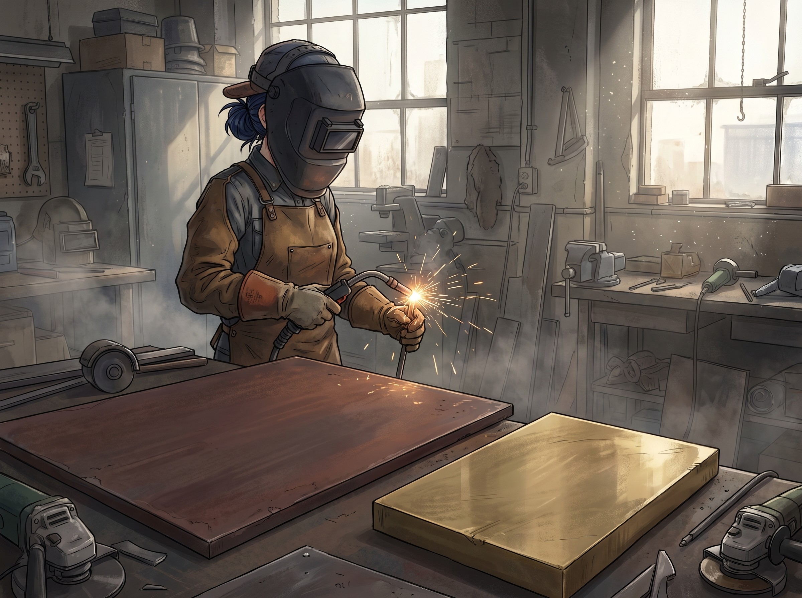

淬鍊

週三清晨，波特蘭社區學院的重型金屬加工車間裡，空氣中瀰漫著濃烈的臭氧、金屬微塵與冷卻液氣味。
Chloe 換上了厚重的防火皮質圍裙，雙手戴著耐高溫焊接手套，深藍色的長髮被緊緊束在耐火工作帽裡，臉上扣著全覆蓋式的暗色自動變光焊接面罩。
工作台上，平鋪著兩塊她昨天剛從廢舊金屬集散地淘來的「極品主料」：底板是一塊重達三十公斤、表面已經歷經風雨侵蝕、呈現出均勻暗紅褐色氧化層的耐候耐酸耐磨鋼板；前景主料則是一塊厚度足有 5 毫米、沉甸甸且未經加工的高純度實心老黃銅板。
Chloe 將 Victoria 昨晚發來的 CAD 向量圖紙導入數控等離子切割機的控制終端，仔細校準了原點與切割路徑。
「好了，蔡斯總監，」Chloe 自言自語地咧嘴一笑，指尖重重按下了啟動綠色按鈕，「看看妳的黃金比例能不能扛住一萬五千度的高溫弧光。」
「哧————！！！」
高壓氣流夾帶著耀眼的藍白色等離子電弧瞬間噴湧而出，以雷霆萬鈞之勢刺穿了 5 毫米厚的黃銅板。
橘紅色的高溫金屬熔渣伴隨著爆裂的火星雨向下激射，照亮了車間昏暗的角落。割槍沿著預設的極簡幾何軌跡精準遊走：重型外六角螺母的外輪廓、火車鋼軌切面的銳利線條、以及鏤空負空間裡那個極具張力的抽象「P」字，被高溫等離子束一絲不茍地剖切出來。
緊接著是英文字體。「PRICE FORGE & ATELIER」與「Est. Portland」的每一個字母都在火光中精確剝離，邊緣俐落如刀削。
半小時後，等離子弧光熄滅。
車間裡只剩下抽風機的轟鳴與冷卻液滋滋作響的蒸騰白汽。
Chloe 掀起面罩，擦了擦額頭滾落的汗水。她拿起重型金屬鉗，將剛切下來的黃銅主標識夾進冷卻水槽。「呲——」的一聲白霧升起，冷卻後的黃銅件露出了原本略帶粗糙的金屬切口。
真正的硬核考驗才剛剛開始——手工拉絲與微米級去毛刺。
Chloe 將黃銅大件牢牢固定在木工台鉗上，換上了 240 號粗目研磨百潔絲輪與氣動打磨機。她深吸了一口氣，雙臂肌肉緊繃，以完全恆定的速度與單一方向，沿著金屬橫向紋理均勻推動磨頭。
「沙——沙——沙——」
金屬微屑在空氣中飛舞。每一次推動都必須保證絕對平行，哪怕手腕產生一毫米的微小抖動，整塊鏡面的拉絲反射光感就會徹底報廢。
Chloe 眼神專注得宛如暗房裡對焦的 Max。她甚至放慢了呼吸，一遍又一遍地用手動金剛石銼刀修整著字母內側的直角倒角，直到指腹撫摸過每一個邊緣時，完全感覺不到半點刮手的毛刺。
最後一步，組裝與懸浮固定。
在暗紅色的耐候鋼底板上，Chloe 精準測量打孔，攻出十二個 M6 螺紋孔，旋入特製的實心黃銅加長螺柱。
她將手工拉絲完畢、呈現出冷冽暗金色澤的黃銅鏤空標識對準孔位，套入 15 毫米的黃銅懸空襯套，最後用黃銅沉頭螺母逐一擰緊。
「咔、咔、咔。」
扭力扳手發出三次清脆的鎖死聲。
整塊長達 1.2 米的招牌在工作燈下傲然矗立：深紅粗糙、帶著厚重歷史感的鐵鏽底板，與前方懸空浮動、泛著細膩橫向拉絲冷金光的黃銅立體標識形成了近乎窒息的美學對抗；15 毫米的陰影空隙在燈光下投下深邃的幾何剪影，大氣、冷硬，卻又精緻得無可挑剔。
Chloe 摘下耐火帽，任由汗濕的藍髮披散在肩頭。她退後兩步，雙手叉腰，看著眼前這件融合了自己全身力氣與 Victoria 極致審美的工業巨作，忍不住仰起頭，在空曠的車間裡發出了一聲暢快淋漓的大笑：
「媽的……這玩意兒簡直帥得能把整條波特蘭鐵道直接點著！」